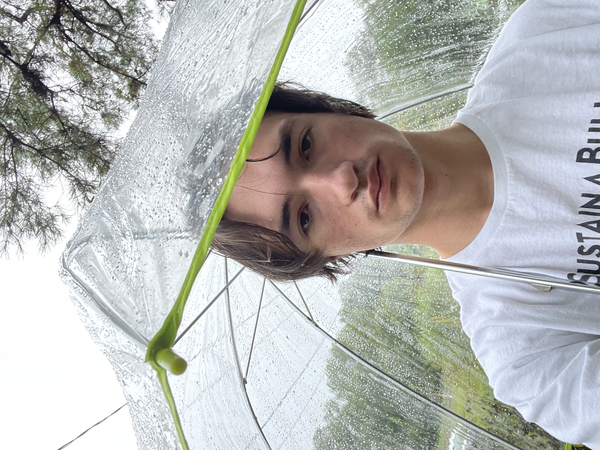

"Community is the most important thing I built here."
I am a Biomedical Engineering student at NC State University with specialization areas of Regenerative Medicine and Biosignals and Imaging. And a minor in Teamwork in Interdisciplinary Biomedical Research. My work focuses on the Grand Challenges Scholars Program (GCSP) health theme: Engineer Better Medicines. My time at NCSU is best defined by Research, Entrepreneurship, and Community Building.

OUR Spring 2026 Research & Creativity Symposium

Malcolm Albergo-Radisch
Talent
GCSP REU: LGR5+ Cell distribution in Airways Across Space and Time
Spring 2026
Executed a spatial mapping project to determine why pulmonary repair capacity diminishes with age, using the porcine lung as a translational model for human anatomy.Developed automated QuPath protocols for LGR5+ nuclei detection and airway measurement.
Identified a developmental transition from spatial uniformity in newborns to significant regional differences in juveniles. Findings provided the statistical baseline for a lifespan-wide pulmonary atlas, including fetal and aged boar models.

NSF Workshop Friends
Mentoring Catalyst Engineering Research, Career, and Communication Workshop
Spring 2026
The first of its kind. One of three NCSU students chosen for this workshop with students from all across the country.
Discussed with panels the costs and rewards of pursuing a PhD and career in research.

Icebreakers and Improv
U-TEAM CMI Fellowship: LGR5+ Cell Spatial Distribution in Intervertebral Discs
Summer 2025
Investigated the spatial patterning of LGR5+ cells in the porcine vertebral column to identify potential therapeutic targets for degenerative disc disease.
Identified LGR5 expression specifically at the annulus fibrosus edges, suggesting a localized developmental role in IVD patterning.
Skills: Cryosectioning, Immunohistochemical Staining, Confocal Microscopy.
Interdisciplinary

Piedrahita Lab "Green Lung" Logo
Piedrahita Lab Logo
Spring 2026
This is a logo I made for Piedrahita lab in Biorender. Reflects the LGR5-H2B-GFP gene-edited porcine model that we use for understanding the roles that LGR5-expressing cells have in the development and regeneration of different tissues.
Represents not only a time that I used my artistic ability in a STEM space but also a year of built up confidence in the lab.
Expert Theory Wargame: Sleeping Giants
Spring 2026
Represented Team Brazil in a 2030 geopolitical simulation centered on AI supremacy and rare-earth element supply chains. I served as a key strategist, navigating supply chain shocks and political radicalization to secure a first-place finish.
Hosted by UNC Global Affairs, Triangle Institute for Security Studies, WINS, and CSEEES.

Winning Team Brazil - Feb 2026
Second City Improv Workshop
Fall 2025
Learned to live a little with Second City on one of their annual shows at NC State.
Second City has come to to Stewart Theatre in the fall to kick off Arts NC State programming every year and I've been in the audience every single time.
Silver Ring Workshop
Spring 2025
Made a silver ring in an NC State Crafts Center Workshop.
I enjoyed this and got to use annealing, a process I've only heard about in biomaterials courses.
Entrepreneurship
The Bad Idea Pitch Competition
Spring 2026
Selected as the sole student team to compete alongside seasoned entrepreneurs in a high-stakes satirical pitch event hosted within the local innovation ecosystem, for Raliegh-Durham Startup Week.
Mentored by Amanda Stockwell to refine our narrative and delivery.
Defended Cling Capital viability against a panel of professional judges, focusing on quick-witted response and public speaking.

Bad Ideas Pitch Crew

VenturePack Challenge Finalist Award
VenturePack Finalist
Spring 2025
Central Essentials: A project to improve student access to necessary items at any time of day.
This concept made it to the final round of NC State University Innovation and Entrepreneurship's VenturePack Challenge a pitch competition with prizes above $125,000 every year.

Central Essentials Logo
Village Mentor - Albright Entrepreneurs Village
Spring 2025 - Spring 2027
Planned and executed events for the entrepreneurship community on centennial campus at NCSU.
Built community through a shared entrepreneurial and innovative spirit.
Supported by a strong team.

AEV 2026 Group
Multicultural Competency
GCSP Annual Meeting Rome and UCBM COIL
Spring 2026
Selected to represent NC State at the 2026 Annual Meeting at Sapienza Università di Roma.
Partnered with students from Università Campus Bio-Medico di Roma to create and Present a COIL project on national health databases.
Engaged in discussions on the pitfalls of engineering education as well as altenative service breaks, emphasizing that impactful engineering must be reparable and embraced by the local community.

NCSU and UCBM Scholars in front of Colliseum

St. Valentine's Relic on St. Valentine's Day

Developing Cultural Competence Certificate
Fall 2024
Completed NCSU-Nagoya University COIL project.


Friends and Flags


Intersection and Iguana


Carnival and Waterfall
Colombia Study Abroad
Summer 2024
Studied abroad in Barranquilla, Colombia. I took classes in engineering economics and geographies of energy at UniNorte, one of the highest rated universities in the country. Toured energy companies, Gecelca and Promigas. Learned more about Colombian and Caribbean culture then I'd ever thought I'd know. And made a ton of friends, some I see every so often on NC State's campus, some 1,700 miles away.

Mountains in Minca

Historic Cartagena

Marimonda
Academic Development: 2027 (Projected)
Thesis Plan
Plan to complete HON498/499 and BME491/492 (Two different senior thesis projects).
Academic Development: 2026
HON 498: Research Independence
A semester-long deep dive into the Piedrahita Lab that served as a catalyst for my growth as an independent biomedical investigator.
Progressed from learning imaging fundamentals to developing and documenting lab-wide protocols for digital pathology. Contributed critical statistical data to a grant proposal, proving the real-world impact of my findings.
Stepped into a mentorship role, training lab members and visiting researchers on QuPath and computational analysis.
Academic Development: 2025
BME 302 Lab Report
Human Physiology: Mechanical Analysis was one of my favorite courses at NC State.
Learned about the vascular, pulmonary and renal systems and the muscles and pressures that drive them.
Academic Development: 2024
STS 490: Geographies of Energy
A course taken in Colombia focused on how energy generation, transfer and usage affect national identity.
Venzuela National Energy ProfileAn in-class presentation on Venezuela's energy identity, spoiler alert: it has to do with oil.
Energy Inequality Podcast
As a project for this course, fellow NC State student Austin Robinson and I sat down with Karoll Torres to discuss the energy identity of Colombia and the inequality therein.
PLS
Story is about begging instructor of the course, Aaron Keane, for an A in the course. Led to an A- in the course.
Eclipse Song
Final project, a reflection on solar eclipse that happened earlier that week. The pride of wanting to witness great scientific events without the proper knowledge and protection. Hubris and humiliation.
MUS 270: Songwriting with DAWs
This course was a step toward musical liberation for me. Giving time, deadlines, structure and critiques for songwriting allowed me to just make decisions and not dwell on the minutiae of any part of the song. Aaron Keane was an excellent instructor, he lived the audio engineering life and had music projects that were super high quality.
I did all of the guitars and vocals on the songs. My not yet roommate, Zack Brooks, did all of the producing. Together we figured out the song structure, like we were playing madlibs. Then I would free-style lyrics over the top of the track, two or three times, and we'd pick the best bits. That was our method.
My biggest regret of the course is that I never took the second level, MUS 370.
As a funny side note, we got more points if our songs had a bridge. So, in the recordings if you hear me say bridge, that's just me securing a higher grade.
Academic Development: 2023
HON 202: The Art of War
My first course of college and first year honors course, The Art of War with Dr. Catherine Mainland. I believe this course was chosen for me, but whoever made that decision made a good one.
We did not read The Art of War.
Short Paper HemingwayPress

Exploring Entrepreneurship Beyond Raleigh with the Albright Entrepreneurs Village
On our spring break trip to Charleston, SC.

How Research Reshapes Futures: Comparative Medicine Institute – University Honors Program Fellows Reflect
On our experiences in the U-Team CMI Fellowship.

Impact of Mentorship Program: Mentorship Program makes big impacts on students from all disciplines.
On our experiences at Innovation and Entrepreneurship's Mentor Meetups.

Estudiantes de North Carolina State viven un verano de aprendizaje e inmersión cultural
On our study abroad in Barranquilla, Colombia.

Building the Bridge: St. Philip’s Eagle Scout honors creation and legacy with one project
On my Eagle Scout Project.
Social Consciousness
Advocacy
Advocacy: Led the second Durham No Kings Protest as a challenged voter.
Event Highlight: AEV Non-Profit Day
Spring 2026
As a village mentor organized and executed a day trip to 501(c)(3) organizations in Durham to discuss with their leadership the mission and outcomes of their work.
Durham Non-Profit Day Recap
Flyer
BME Undergraduate Advisory Comittee
Fall 2025 - Spring 2026
Represented NC State University Juniors in the Lampe Joint Department of Biomedical Engineering in undergraduate advisory comittee meetings.
Voiced input on departmental considerations including GPA required to take graduate level courses as an undergraduate and curriculum changes.
Museum of Life and Science Education Facilitator
Fall 2023 - Spring 2026
Worked in the Education and Engagement department. Utilized inquiry-based learning to engage young learners, facilitated spaces and experiments for guests of the Museum. Trained in animal, insect, planetarium and liquid nitrogen demonstrations.
Facilitating Education